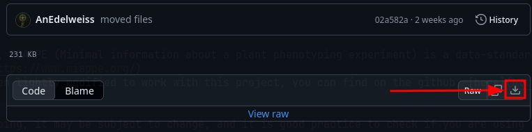

Documentation SIMPLE
This documentation is here to guide you when uploading phenomic data and metadata with corresponding images while following the MIAPPE standard on your PHIS instance !
I tried making this documentation as clear as possible, but if you have any issues/question/want to contribute, don’t hesitate to contact me.
Simple interface MIAPPE-PHIS Lightweight and Efficient
How to use
Before ‘using’ anything, we will need to :
- Properly fill the MIAPPE template available on the Github.
- Organize the experiment folder containing data/datafiles…
Small glossary :
Tabular data file : refers to a xlsx/excel file containing tabular data of the experiment like such : [IMAGE] Datafiles : refers to images, spectral images, archives linked to the experiment.
The MIAPPE file.
Let’s start with the MIAPPE file : MIAPPE (Minimal information about a plant phenotyping experiment) is a data-standard maintained by a community of volunteers, you can check it out here : link The basic MIAPPE template has been lightly modified to work with this project, you can find on the github : here.


Since the developement is still ongoing, it may be subject to change, and it is good practice to check if you are using the latest version available, this can be done by following updates.c As previously stated,the regular MIAPPE file has been modified to account for new columns corresponding to Phis vocabulary, this is the second row, please, do not rename or tamper with columns and columns names as it would make reading it impossible by a program… Regarding the filling of the document, it is the same as a regular MIAPPE file and the color code should be respected : red = mandatory, green = recommended, black = optional; if only one of two column name are red it means it still means the information is required. As you may have noticed, I annotated most cells of the MIAPPE file, telling you how each cell should be filled when you put your mouse on the cell;  However, you will find below tips and guidelines to aid you in filling properly the document, sheet by sheet if there is anything important or complex on that sheet.
However, you will find below tips and guidelines to aid you in filling properly the document, sheet by sheet if there is anything important or complex on that sheet.
Read Me sheet :
This sheet contains information about each column of each sheet in the Miappe document, this is part of the original MIAPPE file and is only used to help you fill it properly. You can freely modify it, write memos etc or delete it altogether if you’re sure you don’t need it anymore.
Project sheet :
In the PHIS vocabulary, a project can host multiple experiments. Here is where you will fill information about the project where your experiment belongs. The project has to be created by hand on your phis instance before being referenced on the MIAPPE sheet, SIMPLE does not create projects This sheet is pretty straightforward to fill.
Experiment sheet :
The experiment sheet contains crucial information about your experiment. Fill it carefully. You can find help regarding some important columns below :
- name : How your experiment is named, how it will be searched and displayed in PHIS.
- start_date and end_date : needs to follow this template : “yyyy-mm-dd”.
- organisations : need to be created manually if they don’t already exist on your instance and are separated by commas
- experiment_timezone : Needs to be filled following the timezone standards “Europe/***”, if left blank, it will default to UTC. This is also used when importing data and datafiles.
- facilities : same instructions as organisations.
- funding : same instructions as organisations.
- projects : name of the project the experiment is part of (cf project sheet ‘name’)
- groups : same instructions as organisations.
- scientific_object_type : must be part of the rdf phis vocabulary. Has only been tested for ‘Plant’ so far… Other types may be ‘Plot’, ‘seed’, ‘leaf’…
[example of a correctly filled sheet]
Person sheet :
This sheet is not currently used by the program and may be filled freely. You should create one line per person in the project.
Germplasm sheet :
The germplasm sheet is also especially important, this is where every germplasm ( variety and species) will be declared. You can find help regarding some important columns below :
- name : is the name of the germplasm, how it will be looked up, and displayed, if the germplasm is already on your phis instance, please be sure that there is no typo and that the names matches exactly. If not, a new germplasm will be created, thus leading to duplicate data and issues…
- rdf_type : you currently have the choice between Species and Varieties (vocabulary:Species or vocabulary:Variety( Warning : this is case sensitive )). Please declare all the species that will be used by the varieties before declaring varieties. Following the example below:
[IMAGE]
- uri : You can put the external uri of the germplasm here. If left blank, it will create a default uri; this is not recommended.
- species : If the germplasm is a variety, you can put the name of the species it belongs to in this column. If it is a species, you can leave this column blank.
[example of a correctly filled sheet]
Concerning the other columns : They can be filled using the Read me sheet of the MIAPPE file, notice that they are colored in green, and thus are not mandatory. Please fill out as much information as you have on the germplasms.
Factors sheet :
This sheet is also very important when creating the factors related to our experiment. You can find help regarding some important columns below :
- factor name will be used to look for factors in your tabular data file when creating scientific objects for example, this means the factor name has to exactly match the name of the column used to give the factors for each row in your tabular datafile.
- factor description : can be used to describe the factors
- factor levels names are used in the same way, this means you have to exactly match the factor levels (low light, high light, water stress 80, water stress 20) or there will be errors. You cannot name your factor levels using certain symbols (PHIS safeguards). Forbiden symbols include but are not limited to - , +, /, %, * Math symbols…
- factor_level_desc : can be used to describe in details each factor levels :
Below is an example of good match between factors and factor levels in the MIAPPE and the Tabular data :
[IMAGE]
- If your factors look like this, please separate them using the text to column option on your favorite spreadsheet program.
- Here, we can see the name on the first row doesn’t exactly match the data. The same problem can be seen on the factor levels.
- Here, we can see that the factor level names contain forbidden characters, this will not work.
[IMAGE]
mapping_table_variables sheet :
This sheet is an addition to the original MIAPPE and can be deleted if you want to share the MIAPPE file. It contains two columns :
- column_in_data_table : This column corresponds to the exact name of the columns in your tabular data file. The names must exactly match.
- opensilex_variable_name : This column corresponds to the name (or shortname) of the equivalent variable on the PHIS instance. Thus, you have to manually create the variables if they do not already exist on your instance, then reference them here. The program will automatically pick the right variables for the right datafile, so you can safely copy-paste your ‘mapping_table_variables’ sheet onto different experiments, even if the variable is not used in the present experiment.
[example of a correctly filled sheet]
data files sheet :
This sheet is crucial when importing datafiles (Images/archives…). You can find help regarding some important columns below :
- dataFileLink : refers to the exact name of the tabular data file that will be linked to the datafiles your are importing. With the extension.
- dataFileDesc : can be a description, the number of parameters in this tabular data file etc…
- Tabular Data Provenance : If there is no provenances yet for your instance/the data you want to upload; you have to create a provenance manually on your phis instance when importing data and datafiles. If there is one, simply put the exact name of the provenance to link the tabular data to it.
- Datafiles1 Provenance and Datafiles2 Provenance : With SIMPLE you can upload two sets of datafiles linked together, this canbe the raw image and the derived image. If you only have one set of datafile, just fill what is related to the first set of datafiles and leave the reste blank. Same instructions as Tabular Data Provenance but regarding the datafiles (Images/Archives) uploaded, please use/create another provenance specific for images.
- datafile1_rdf_type and datafile1_rdf_type : you currently have the choice between RGBImage and Archive. Warning : this is case sensitive. If you are importing images, use RGBImages…
[example of a correctly filled sheet]
etc.. sheet
The experiment structure.
Each experiment should have a dedicated folder, the filled miappe template for the experiment, the tabular data, the datafiles you would like to upload should all be inside this folder like so :
[example of a correct file structure]
The tabular data file.
All column names are case sensitive.
Mandatory :
There is only two mandatory columns for tabular data, the ‘timestamp’ column and the ‘germplasm’ column.
- the timestamp column should contain the timestamp of when the data was collected following the standard : ‘YYYY-MM-DD HH:MM:SS’. Valid exemples would be : 2025-01-12 12:10:56…
- the germplasm column should contain the germplasm’s name. Valid exemples would be : …
Optional :
However, if you would like to link data to datafiles (images, archives) you also need to create a column named ‘Datafile1_Filename’ stating for each row the exact name of the datafile. This will be the first set of datafiles. If there is a second set of datafiles, derived from the first one, you will need to create a second column named ‘Datafile2_Filename’ stating for each row the exact name of the datafile.
- the Datafile1_Filename & Datafile2_Filename columns should contain the exact filename of the datafile with it’s extension (.png,.jpeg, .tar, .png etc). Valid exemples would be : 121_9_2024-06-24_07-24-41_2024_ToAB_Stress_79_RGB2_FishEyeCorrected.png, Archive-12.tar, 163-38-24_KuKa_117-Cst-L-1.1-Area 02-RGB2-FishEyeMasked-Crop.png… etc.. (((toolbox ?))))
[example of a correctly filled tabular data file]
The datafiles.
named properly idk frrr
Importing data using the CLI
meow